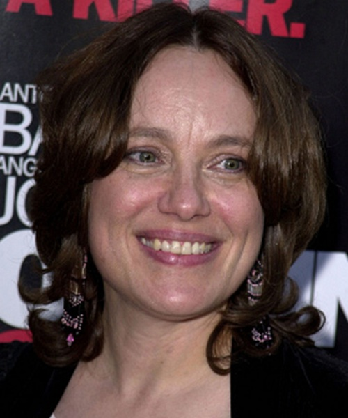
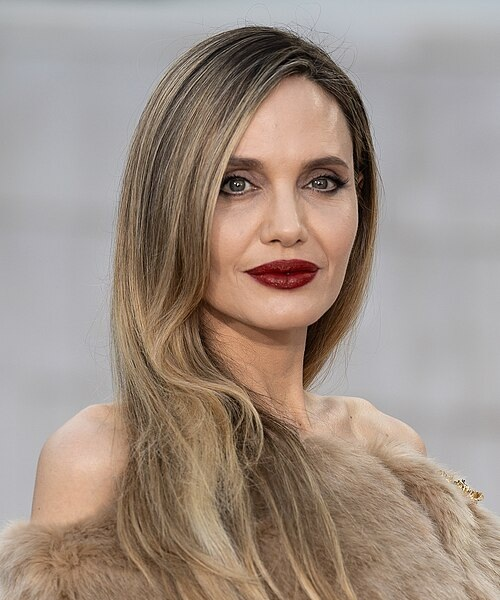

Jon Voight is an American actor born in 1938. He was born in Yonkers, New York. He studied at the Catholic University of America and later at the Neighborhood Playhouse School of the Theatre He started his career from 1961 to the present. Jon Voight earned many major awards such as Academy Award and four Golden Globes.
Mother

Marcheline Bertrand
Marcheline Bertrand was an American actress, producer, and humanitarian. Bertrand was born May 9, 1950, in Blue Island, Illinois. she attended Beverly Hills High School and later studied acting under Lee Strasberg. She died on January 27, 2007, at age of 56, from breast cancer.
Daughter

Angelina Jolie
Angelina Jolie is an American actress, filmmaker, and humanitarian. She was born on June 4, 1975. Angelina is one of the most famous Hollywood star for decades. Beside her career, she served as UNHCR Special Envoy from 2012 to 2022.